EE1021 Programming for Engineers - Lecture 13
plot.plot(y) will plot your data (y) against an arbitrary (numbered) x-axis.plot(x, y) will plot your data (y) against the corresponding x-axis locations in x.plot function will display all columns of y as separate lines.' to transpose the matrix.errorbar.errorbar(x, y, SE) will plot data with error bars whose length is specified by SE.scatter function.scatter function requires a minimum of two inputs (i.e. both x and y data).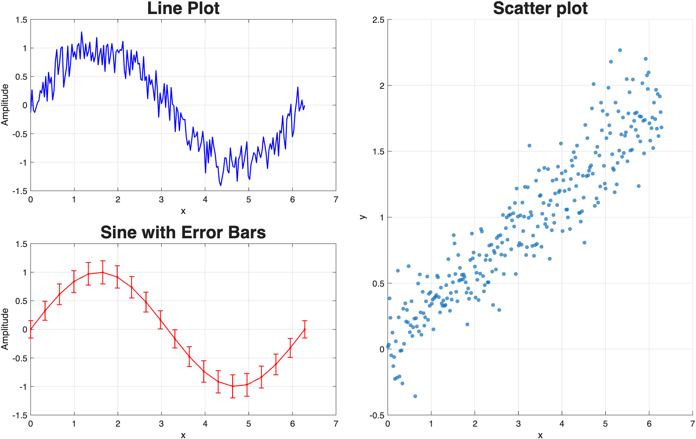
plot function automatically generates a new figure window, if one is not open.plot function automatically overwrites an existing figure window, if one is open.figure command.hold on / hold off commands.close command.close all command.xlim([min max]) and ylim([min max]).axis function can also be used adjust axes in several different ways.axis tight fits the axes limits to the data exactly.axis square makes the figure axes square, for display purposes.axis off removes the axes, labels and background, for display purposes.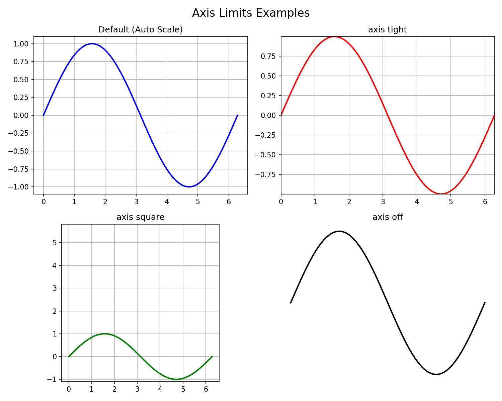
xlabel('string') and ylabel('string').title('string').text(x_position, y_position, 'string').title('string', 'FontSize', 24) or title('string', 'FontName', 'Times').xlabel('Time (s)', 'FontSize', 14)
ylabel('Amplitude (V)', 'FontSize', 14)
title('Damped Sine Wave Analysis', ...
'FontSize', 24, ...
'FontName', 'Serif')
text(2, 0.8, 'Peak Value', ...
'FontSize', 16, ...
'Color', 'red')
text(2, -0.5, 'y = sin(x) * e^{-0.1x}', ...
'FontSize', 14, ...
'FontAngle', 'italic', ...
'BackgroundColor', 'white')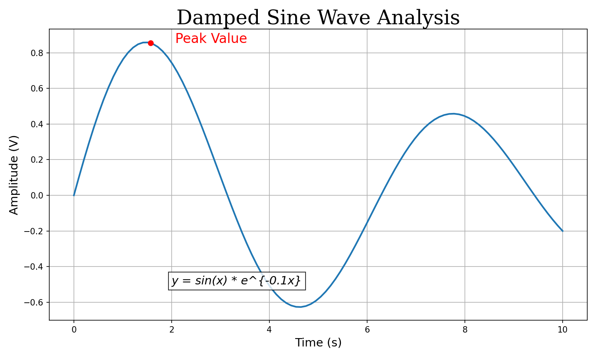
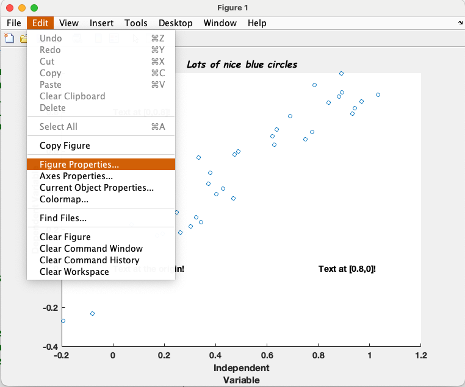
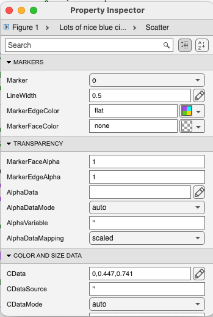
LineWidth, LineStyle, and Color for lines…Marker, MarkerEdgeColor, MarkerFaceColor and MarkerSize for markers.plot(x, y, 'LineWidth', 3, 'Color', 'r', 'LineStyle', '--')plot(x, y, 'r--*')Color
b: Blue (default)g: Greenr: Redk: Blacky: Yelloww: Whitec: Cyanm: MagentaLineStyle
-: Solid line (default)--: Dashed line-.: Dash-dot line:: Dotted linenone: No lineMarker
o: Circle.: Pointx: Cross+: Plus sign*: Asterisks: Squared: Diamondv/^: Trianglesp: Pentagramh: Hexagramset function.set(FigureHandle, 'Property_Name', Value).set(gca, 'TickDir', 'out', 'Xscale', 'log').gca, which specifies the ‘current’ figure.% Define line properties during plot creation
plot(x, y, ...
'LineWidth', 2, ...
'LineStyle', '--', ...
'Color', 'b', ...
'Marker', 'o', ...
'MarkerSize', 8, ...
'MarkerFaceColor', 'r', ...
'MarkerEdgeColor', 'k');
% Edit axes properties using 'set'
set(gca, ...
'TickDir', 'out', ...
'FontSize', 14, ...
'XGrid', 'on', ...
'YGrid', 'on');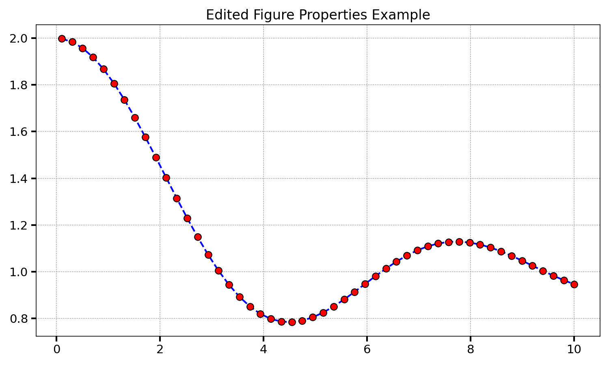
subplot.subplot(Panel_Rows, Panel_Columns, Panels_to_be_used).subplot(2,2,1) sets up a 2 x 2 square of panels, and plots in the first.subplot function with an output variable.h1 = subplot(2,2,1).set(h1, …) etc.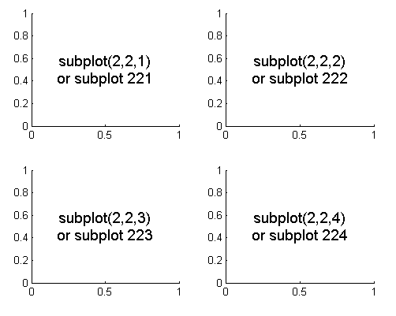
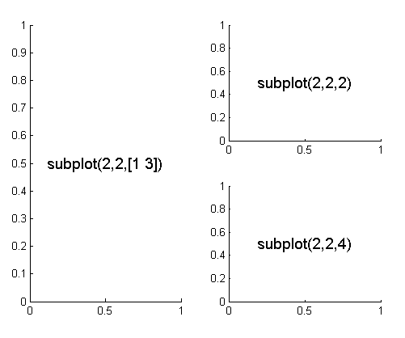
% Create a new figure
figure;
% First subplot: Sine wave
subplot(2, 2, 1);
plot(t, sin(t), 'b-');
title('Sine Wave');
% Second subplot: Scatter plot
subplot(2, 2, 2);
scatter(rand(1,20), rand(1,20), 'r');
title('Scatter Plot');
% Third subplot: Bar chart
subplot(2, 2, 3);
bar([10 25 15 30], 'g');
title('Bar Chart');
% Fourth subplot: Cosine wave
subplot(2, 2, 4);
plot(t, cos(t), 'k--');
title('Cosine Wave');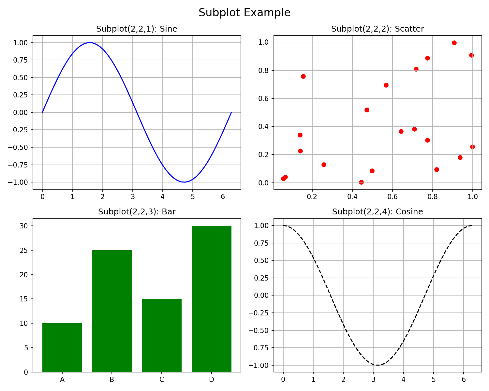
bar and barh functions.bar(y) plots the data in y on an arbitrary x-axis of 1 to length(y)…bar(x, y) plots the data in y at the x-axis positions defined in x.bar(x, y, width).PropertyName, Value syntax from above.bar(x, y, 'FaceColor', 'r', 'EdgeColor', 'k').hist function.hist(y).hist(y,x).hist(y,n).plot – input the data first, x-axis positions second.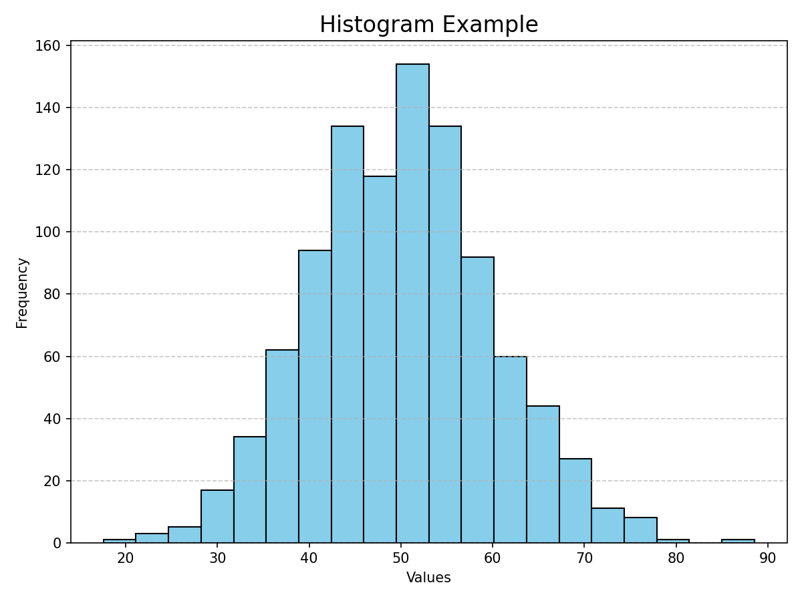
contourf.contourf(Z): Uses the column and row indices of Z as x and y coordinates.contourf(X, Y, Z): Uses X and Y matrices to define the coordinates for Z.X and Y: Usually generated using meshgrid. X varies across columns, Y varies down rows.Z: A matrix of the same size where Z(i,j) is the height/color at (X(i,j), Y(i,j)).contourf function also allows you to specify how many z gradations are plotted.
contourf(x, y, c, n).% Create coordinate grid
x = linspace(-3, 3, 100);
y = linspace(-3, 3, 100);
[X, Y] = meshgrid(x, y);
% Define function Z on grid
Z = 3*(1-X).^2.*exp(-(X.^2) - (Y+1).^2) ...
- 10*(X/5 - X.^3 - Y.^5).*exp(-X.^2-Y.^2) ...
- 1/3*exp(-(X+1).^2 - Y.^2);
% Plot filled contour with 20 levels
contourf(X, Y, Z, 20);
colorbar;
title('Filled Contour Plot');
xlabel('x'); ylabel('y');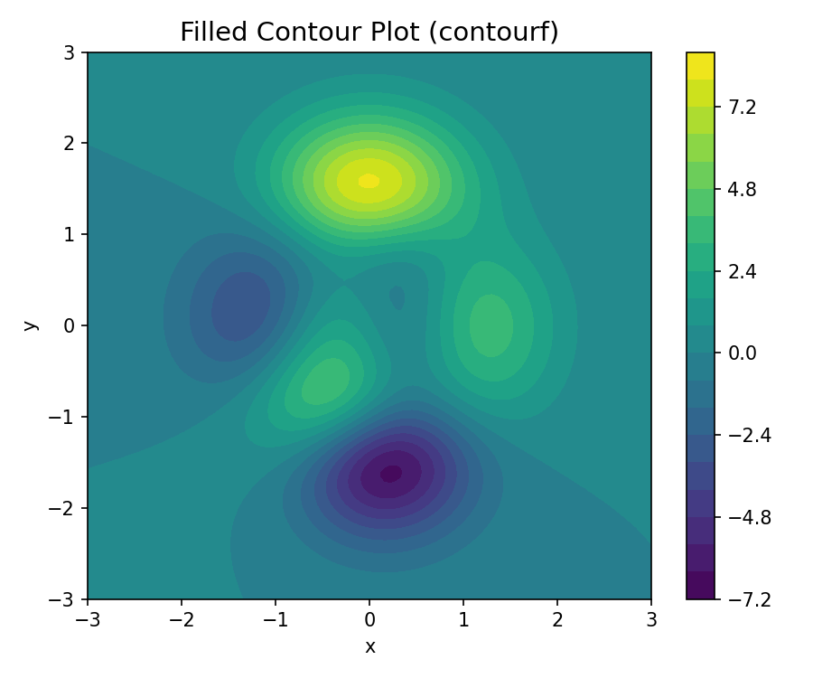
imagesc.imagesc(C) or imagesc(x, y, C).imagesc function automatically inverts the y-axis (image coordinate system).set(gca, 'Ydir', 'normal') or axis xy.plotyy: allows you to plot multiple lines on one figure with different y-axes.pie: allows you to plot a pie chart (with one emerging segment!).loglog, semilogx, semilogy: allows you plot one or more logarithmic axes.surf: allows you to plot a 3D surface (like the MATLAB logo!).*.bmp, *.jpg, various Adobe Illustrator formats etc.*.fig format can be re-opened and edited.numpy.array, but by default.A(1), while Python uses 0-based A[0].1:10 (inclusive), Python uses 0:10 (exclusive of end).dlmread or csvread. Use modern functions:readmatrix: Best for purely numerical data (like numpy.loadtxt).
data = readmatrix('scope_trace.csv');readtable: Best for mixed data (like pandas.read_csv).
T = readtable('experiment_log.csv');T.Voltage (like df['Voltage']).d = {'volts': [1, 2], 'unit': 'V'}struct):
data.volts = [1 2];data.unit = 'V';value = data.volts(1);L = [1, 'text', np.array([1])].{}) to store mixed types:
C = {1, 'text', [1 2 3]};val = C{1};tek0001.csv).% 1. Import Data (skipping header automatically)
data = readmatrix('tek0001.csv');
% 2. Extract Columns (NumPy style slicing)
t = data(:, 1); % Time vector
v = data(:, 2); % Voltage vector
% 3. Analyze
v_peak = max(v);
fprintf('Peak Voltage: %.2f V\n', v_peak);
% 4. Visualize
plot(t, v);
xlabel('Time (s)'); ylabel('Voltage (V)');
title('Oscilloscope Capture');
grid on;Outline: